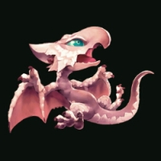
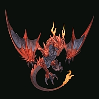
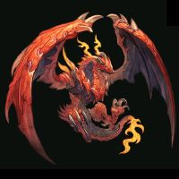
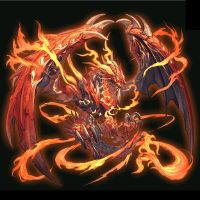
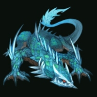
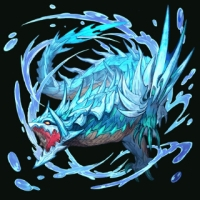
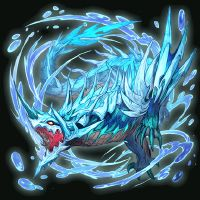
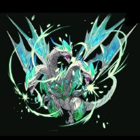
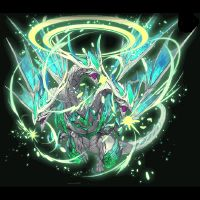
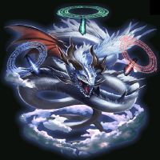

Pet Dragon
On Friday, June 27, 2014, an egg appeared on every account, which could be accessed from an icon on a user's main page. You have to check the egg on three separate days for it to hatch. After that happens, you can level up the dragon and it will help in future events.
Contents
News Announcement[edit]
06/30/2014
As many have noticed, a new feature has been added to the game. To make the egg hatch, access the screen and check the egg on three separate days starting from 6 AM (ET).
After it hatches, a baby dragon will be waiting for caring and nurturing. The skills the dragon learns will give a boost in certain events, depending on how it's raised. There are also skills for an upcoming new feature, Dragon Battle Arena.
You can use a stone purchased from the merchant to evolve the dragon. The element of the stone used determines the type of dragon the baby will become. Each elemental dragon has different skills. The dragon's elements are not related to the realms of man, gods, and demons. The users' realm gives no advantage in the upcoming Dragon Battle Arena.
You can also devolve the dragon by using an item called embryonic shard after meeting certain conditions so please raise your dragon in however way you like. There are many more to raising the dragon for you to try and find out.
Currently, dragon skills are ineffective in events. We're working on implementing them in upcoming events.
Levels, Experience, and Evolution[edit]
Experience[edit]
The dragon gains experience through questing at the same rate as the player. This works both with the main Quests as well as event quests. Also, the double EXP granted at the beginning of an event will count towards leveling your dragon.
The dragon also gains 500 experience by eating Fang Berries or 5 levels from being given Ancient Souls (available from the Merchant).
Levels and Evolution[edit]
After hatching, the dragon begins as a level 1 baby dragon. It gains levels and ATK with experience as shown below until it reaches max at level 10. The formula for ATK appears to be (1000 + [200 x level]), with level 1 treated as zero.
| Level | EXP Required | Cumulative EXP | ATK |
|---|---|---|---|
| 1 | - | - | 1000 |
| 2 | 20 | 20 | 1400 |
| 3 | 20 | 40 | 1600? |
| 4 | 20 | 60 | 1800? |
| 5 | 40 | 100 | 2000 |
| 6 | 50 | 150 | 2200 |
| 7 | 50 | 200 | 2400 |
| 8 | 50 | 250 | 2600 |
| 9 | 50 | 300 | 2800 |
| 10 | 200 | 500 | 3000 |
Once a baby dragon has reached level 10, an elemental stone (available from the Merchant) can be used to evolve it into a level 1 Fire, Water, or Wind dragon. The elemental forms are not linked to the realm of the player; neither the dragon nor the player get any additional boost due to realm/elemental interactions. However, each elemental form does have skills that confer bonuses based on cards of a given realm, as described below.
The adult elemental dragon gains levels and ATK with experience until it reaches max at level 50. The experience required to reach the next level is (300 + [10 x current level]), and the ATK at a given level is (5000 + [350 x level]); note that for both formulae level 1 is treated as zero. The required experience to reach a given level and the dragon's ATK at that level are shown in the table below.
| Level | EXP Required | Cumulative EXP | ATK |
|---|---|---|---|
| 1 | - | - | 5000 |
| 2 | 300 | 300 | 5700 |
| 3 | 320 | 620 | 6050 |
| 4 | 330 | 950 | 6400 |
| 5 | 340 | 1290 | 6750 |
| 6 | 350 | 1640 | 7100 |
| 7 | 360 | 2000 | 7450 |
| 8 | 370 | 2370 | 7800 |
| 9 | 380 | 2750 | 8150 |
| 10 | 390 | 3140 | 8500 |
| 11 | 400 | 3540 | 8850 |
| 12 | 410 | 3950 | 9200 |
| 13 | 420 | 4370 | 9550 |
| 14 | 430 | 4800 | 9900 |
| 15 | 440 | 5240 | 10250 |
| 16 | 450 | 5690 | 10600 |
| 17 | 460 | 6150 | 10950 |
| 18 | 470 | 6620 | 11300 |
| 19 | 480 | 7100 | 11650 |
| 20 | 490 | 7590 | 12000 |
| 21 | 500 | 8090 | 12350 |
| 22 | 510 | 8600 | 12700 |
| 23 | 520 | 9120 | 13050 |
| 24 | 530 | 9650 | 13400 |
| 25 | 540 | 10190 | 13750 |
| 26 | 550 | 10740 | 14100 |
| 27 | 560 | 11300 | 14450 |
| 28 | 570 | 11870 | 14800 |
| 29 | 580 | 12450 | 15150 |
| 30 | 590 | 13040 | 15500 |
| 31 | 600 | 13640 | 15850 |
| 32 | 610 | 14250 | 16200 |
| 33 | 620 | 14870 | 16550 |
| 34 | 630 | 15500 | 16900 |
| 35 | 640 | 16140 | 17250 |
| 36 | 650 | 16790 | 17600 |
| 37 | 660 | 17450 | 17950 |
| 38 | 670 | 18120 | 18300 |
| 39 | 680 | 18800 | 18650 |
| 40 | 690 | 19490 | 19000 |
| 41 | 700 | 20190 | 19350 |
| 42 | 710 | 20900 | 19700 |
| 43 | 720 | 21620 | 20050 |
| 44 | 730 | 22350 | 20400 |
| 45 | 740 | 23090 | 20750 |
| 46 | 750 | 23840 | 21100 |
| 47 | 760 | 24600 | 21450 |
| 48 | 770 | 25370 | 21800 |
| 49 | 780 | 26150 | 22150 |
| 50 | 790 | 26940 | 22500 |
The adult dragon has three forms. After the initial evolution from a baby dragon it is in form 1, at level 15 it evolves into form 2, and at level 40 it evolves into form 3. At each of the latter two evolutions, it also gains one skill point. On reaching level 50, the dragon gives an elemental crystal that can be placed into the Monolith; placing one crystal of each element into the monolith allows you to buy an Inception Fossil from the merchant, which can be used to raise an inception dragon.
Devolving[edit]
Once the adult dragon has evolved into its final form, it can be devolved back to a level 1 baby dragon by using an Embryonic Shard (available from the Merchant). Upon devolving, the dragon's form, level, EXP, and ATK are reset, but it retains all of its skill points and up to one uninherited skill (see below).
Appearance[edit]
Baby Dragon[edit]
| Baby Dragon | |||
| Baby Dragon Level 1 | |||
|---|---|---|---|
|  | |||
Fire Dragon[edit]
| Fire Dragon | |||
| Fire Dragon Level 1 | Fire Dragon Level 2 | Fire Dragon Level 3 | |
|---|---|---|---|
|  |  |  | |
Water Dragon[edit]
| Water Dragon | |||
| Water Dragon Level 1 | Water Dragon Level 2 | Water Dragon Level 3 | |
|---|---|---|---|
|  |  |  | |
Wind Dragon[edit]
| Wind Dragon | |||
| Wind Dragon Level 1 | Wind Dragon Level 2 | Wind Dragon Level 3 | |
|---|---|---|---|

|
 |  | |
Inception Dragon[edit]
| Inception Dragon | |||
| Inception Dragon Level 1 | |||
|---|---|---|---|
|  | |||
Skills[edit]
Skill Points[edit]
After hatching, a dragon starts with 5 skill points. With each of its adult-phase evolutions (at levels 15 and 40 for elemental dragons) it gains one additional skill point, up to a maximum of 60. Because an inception dragon has only one form, raising an inception dragon to max level does not grant any additional skill points. Skill points may be assigned to each of the dragon's skills to raise its skill level; up to 9 points may be assigned to each skill to give a maximum skill level of 10. All skill points are unassigned when a dragon is devolved, but they are not lost, and may be reassigned to new skills in the dragon's new form.
Skill Inheritance[edit]
As an adult dragon gains levels, it learns skills specific to its current elemental form; these are known as "uninherited skills." When an adult dragon is devolved, one of its uninherited skills may be kept as an "inherited skill" in the dragon's next form. Up to six skills may be kept as inherited skills, and these do not go away on subsequent devolutions; in this way, a dragon can possess skills from more than one elemental form.
List of Skills[edit]
For each elemental form, there are five uninherited skills which can be learned. Skills are gained at levels 5, 10, 20, 30, and 50, and each skill has a particular area of the game where it can be used (Castle Crushers, Arena, etc.)
Cygames has stated that the three elements are unrelated to the three realms. From the information currently available, this appears to be true in that neither dragon nor player gets any boost from realm/element interactions. However, for each form of dragon, the Arena skills available at levels 10, 20, and 30 confer advantages to the dragon based on the stats of cards from a given realm; for these skills, Fire is aligned with Demons, Water with Man, and Wind with Gods.
The following is a list of the available uninherited skills for each form of dragon:
| Type | Level | Scope | Skill Name | Skill Effect |
|---|---|---|---|---|
| Wind | 5 | Castle Crushers | Dragon Dance | Can be activated twice per match to give a big boost to your ATK for five minutes. It can't be used again for 30 minutes after it's activated. |
| 10 | Arena | Aetherial Cleansing Breeze | Big boost to your dragon's ATK if your gods cards have greater PWR than the foe's demons cards | |
| 20 | Arena | Saintly Forgiveness | Big boost to your dragon's ATK if your gods cards have greater PWR than the foe's man cards | |
| 30 | Arena | Spear of Light | Big boost to your dragon's ATK if your gods cards have greater ATK than the foe's demons cards | |
| 50 | Raid Events | Dragon Ire | Big boost to score items that you collect for five minutes | |
| Water | 5 | Castle Crushers | Dragon Rage | Deal lots of damage to an opponent's castle or rubble |
| 10 | Arena | Demonhide Sunder | Big boost to your dragon's ATK if your man cards have greater DEF than the foe's demons cards | |
| 20 | Arena | Elysium's Gate Pilgrimage | Big boost to your dragon's ATK if your man cards have greater DEF than the foe's gods cards | |
| 30 | Arena | Stoic Corruption Purge | Big boost to your dragon's ATK if your man cards have greater PWR than the foe's demons cards | |
| 50 | Quest Events | Dragon Breath | Big boost to score items that you collect for five minutes | |
| Fire | 5 | Castle Crushers | Dragon Roar | Big boost to crusher points that you collect for five minutes |
| 10 | Arena | Heavenwrecker Scythe | Big boost to your dragon's ATK if your demons cards have greater ATK than the foe's gods cards | |
| 20 | Arena | Soulrending Cleave | Big boost to your dragon's ATK if your demons cards have greater ATK than the foe's man cards | |
| 30 | Arena | Angelskin Scorching | Big boost to your dragon's ATK if your demons cards have greater DEF than the foe's gods cards | |
| 50 | Castle Crushers | Flight | Can be activated once per match to prevent opponnents from attacking you for the duration of the skill; however, you will be unable to block any attacks. | |
| Inception | 5 | Arena | Words of Creation | Big boost to your dragon's ATK if your gods cards have greater PWR than the foe's gods cards |
| 15 | Raid Events | Ancient Ire | Great boost to score items that you collect for five minutes. | |
| 30 | Raid & Quest Events | Ancient Tear | Fully restores your order's AP, stamina, ATK PWR and DEF PWR | |
| 45 | Quest Events | Ancient Breath | Great boost to score items that you collect for five minutes. | |
| 60 | Arena | Fortress of Will | Big boost to your dragon's ATK if your man cards have greater DEF than the foe's man cards. | |
| 70 | Arena | Waltz of Mayhem | Big boost to your dragon's ATK if your demons cards have greater ATK than the foe's demons cards. | |
| 80 | Castle Crushers | Ancient Blood | Fully restores your AP, stamina, ATK PWR and DEF PWR. |
Monolith[edit]
This feature will be unlocked upon collecting the four necessary crystals, three of which are from raising dragons of the three elements to level 50. The fourth is obtained upon raising an inception dragon to level 80.
(FYI, having filled my Monolith, I can say that as of now, nothing new has happened. There was a cutscene with the merchant, but it was the EXACT same cutscene as when you unlocked the Inception Fossil, and when I went to the store, there were no new items.)